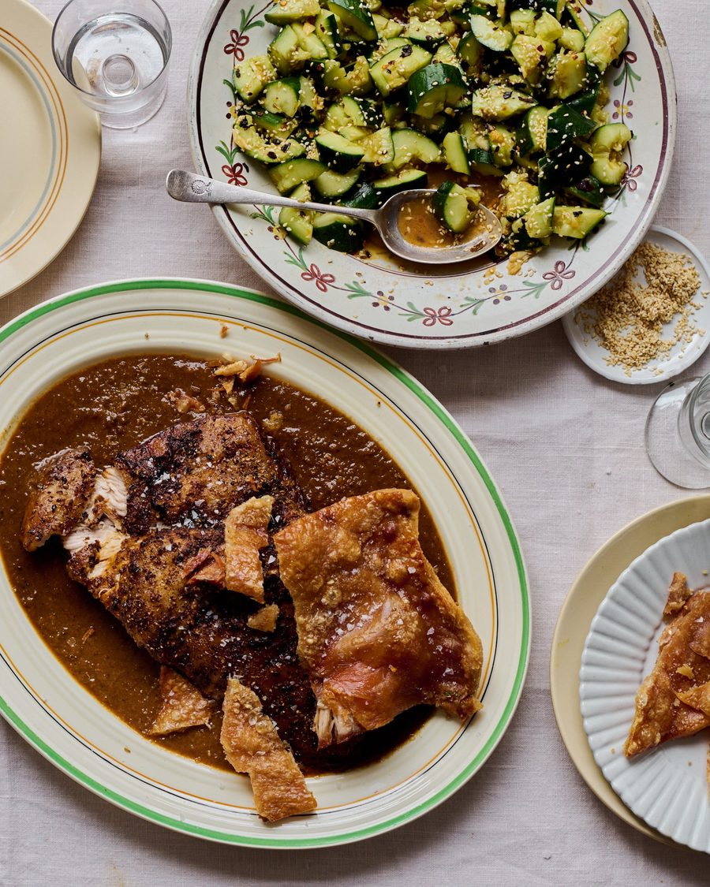

Slow-cooked pork belly with chipotle and tamarind

Cooking the skin separately ensures a delightfully crisp and light scratching that’s perfect for scooping up the rich sauce.
For the rub
An hour or two before cooking, take both the belly and skin out of the fridge to come to room temperature.
To make the rub, put a small frying pan on a medium heat for a few minutes, then gently toast the coriander seeds, peppercorns, star anise, fennel seeds and cinnamon for a few minutes, until fragrant. Stir in the ancho flakes and toast for 20-30 seconds, then tip the spices into a grinder, add two teaspoons of salt and grind to a powder.
Rub both the pork belly and skin with a tablespoon of olive oil, then rub in half the spice mix.
Heat the oven to 240C (220C fan)/475F/gas 9. Dice the onion, carrots, celery and white part of the leek (save the green part for stock). Put the pork belly in a deep roasting dish just big enough to hold it snugly, then cover with foil. Put the skin on a separate baking sheet. Roast both the pork belly and skin for half an hour.
Heat the remaining oil and the butter in a large casserole on a medium heat, add the diced vegetables and the rest of the rub, and sweat, stirring often, for 15 minutes. Stir in the garlic and ginger, saute for another few minutes, then stir in the tamarind, chipotle, sherry, pineapple juice, bay leaves and 150ml water. Bring to a simmer, then take off the heat.
Once the pork and skin have had half an hour, turn down the oven to 160C (140C fan)/325F/gas 3. Gently lift the pork belly out of its roasting dish, pour in the vegetables, then set the meat back on top. Cover again and roast for another two to two and a half hours, until completely tender.
Transfer the pork belly and crisp skin to a warm plate to rest. Tip the contents of the roasting tray into a blender, blitz to a thick puree, then taste and adjust with a pinch more salt, a dash more pineapple juice or a slosh more sherry.
Serve the pork with its delicious sauce and the smacked cucumbers on the side.